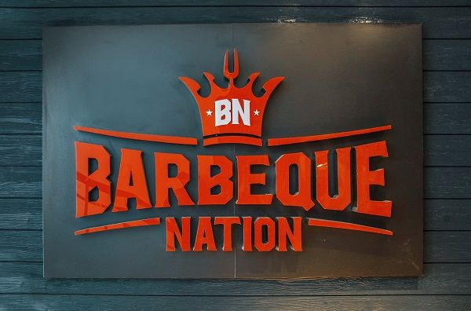

BARBEQUE-NATION HOSPITALITY LTD. (BARBEQUE) - COMPANY HISTORY

Barbeque-Nation Hospitality Limited was originally incorporated as Sanchi Hotels Private Limited on October 13 2006 at Indore Madhya Pradesh as a private limited company. Subsequently the name of the Company was changed to Barbeque-Nation Hospitality Private Limited on February 18 2008. The name was changed to align with the principal business of the Company.
Thereafter the Company was converted into a public limited company and the name of the Company was changed to Barbeque-Nation Hospitality Limited on March 4 2008. Subsequently the registered office of the Company was changed from the state of Madhya Pradesh to Karnataka on January 15 2014.The Company own and operates Barbeque Nation Restaurants one of India's leading casual dining restaurant chains according to the Technopak Report.
The first Barbeque Nation Restaurant was launched in 2005 by Sayaji Hotels one of the promoters. Five Barbeque Nation Restaurants owned by Sayaji Hotels were transferred to the company in 2012. The Company has steadily grown its owned and operated Barbeque Nation Restaurant network from a single restaurant in Fiscal 2007 to 81 Barbeque Nation Restaurants in 42 cities in India and one restaurant in Dubai as of June 30 2017.
In addition as of June 30 2017 the company had granted the franchise rights of one Barbeque Nation Restaurant.Through the Barbeque Nation Restaurants the company pioneered `over the table barbeque' concept in Indian restaurants according to the Technopak Report. Live grills embedded in dining tables allow its guests to grill their own barbecues.
The Company believes its Barbeque Nation Restaurants compared to other fixed price dining options offer competitive attractions such as a wide range of vegetarian and non-vegetarian appetisers and main courses a popular dessert menu a pleasant and casual dining environment and prompt service.
The Company also periodically run popular food festivals at its Barbeque Nation Restaurants offering its guests a range of Indian international and fusion cuisines. The Company is one of the few Indian companies in the organised Casual Dining Restaurant (CDR) segment to have the own in-house chef training school for development of new products.
The Company has recently diversified into a second brand becoming the India franchisee of the American hamburger chain Johnny Rockets. As of June 30 2017 the company had five Johnny Rockets Restaurants in operation and an additional one Johnny Rockets Restaurant was under construction.
The Company intends to scale up its Johnny Rockets Restaurants currently located in Bengaluru Delhi and Gurugram to other Metro cities and Tier-I cities. It also offers fixed price vegetarian and non-vegetarian unlimited six course meals including burgers and milkshakes at some of its Johnny Rocket Restaurants in addition to la carte to reduce the bite size encouraging consumption of a greater variety of dishes. The Company also intends to add new dishes to the current menu.
In 2013 CX Partners acquired a stake in the Company followed by further acquisition of an additional stake in 2015.